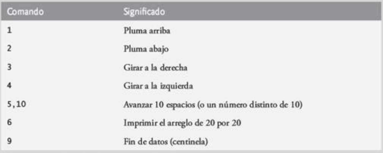

(Gráficos de tortuga) El lenguaje Logo, que es popular entre usuarios de computadora de corta edad, hizo famoso el concepto de los gráficos de tortuga. Imagine una tortuga mecánica que camina alrededor del cuarto bajo control de un programa de JavaScript. La tortuga sostiene una pluma en una de dos posiciones, arriba y abajo. Cuando la pluma está abajo, la tortuga traza figuras a medida que se desplaza ; cuando la pluma está arriba la tortuga se mueve libremente sin escribir nada. En este problema usted simulará la operación de la tortuga y creará un bloc de dibujo computarizado.
Use un arreglo de 20 por 20 llamado piso que esté inicializado en ceros. Lea los comandos de un arreglo que los contenga. Rastree la posición actual de la tortuga en todo momento y si la pluma está arriba o abajo en un momento dado. Suponga que la tortuga siempre empieza en la posición (0, 0) del piso, con su pluma arriba. El conjunto de comandos de tortuga que deberá procesar su secuencia de comandos se encuentra en la siguiente figura.

A medida que la tortuga se desplace con la pluma abajo, establezca los elementos apropiados del arreglo piso en 1. Al proporcionar el comando 6(imprimir), muestre un asterísco o cualquier otro carácter de su elección cada vez que haya un 1 en el arreglo. Siempre que haya un cero, muestre un espacio en blanco.
Nota:
Posición inicial: (0,0)
Está mirando hacia: Derecha.